What Happens When You Type a URL Into Your Browser?
How the Internet Works
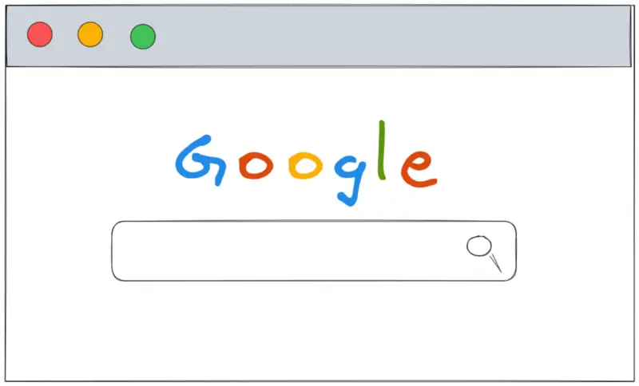
The target audience for this article falls into the following roles:
- Tech workers
- Students
- Engineering managers
- Product managers
- Marketing team
- Sales team
There are no prerequisites to reading this article. I assume that you have used a web browser to navigate across the internet.
Disclaimer: The system design questions are subjective. This article is written based on the research I have done on the topic. Feel free to share your feedback and ask questions in the comments.
Download my system design playbook for free on newsletter signup:
What happens when you type amazon com or www google com in the browser?
At a high level, the following operations happen in the background when you type a URL into your browser and press Enter:
- DNS resolution
- TCP three-way handshake
- HTTPS upgrade
- HTTP Request/Response
- Browser rendering the response from the server
Terminology
The following terminology might be useful for you:
- DNS: data store that contains the mapping from domain name to IP address
- HTTP: standard application-level protocol used to exchange files on the internet
- HTTPS: secure (encrypted) version of HTTP
- TCP: standard that defines how to establish and maintain a network conversation between a client and a server
- Client: web browser or a mobile device that lets you perform different actions on the internet
- Server: a computer that stores files and information in the form of a website
- URL: web address to identify a web resource on the internet
Introduction
When you type a Uniform Resource Locator (URL) into the browser and press Enter, a multitude of actions is executed in the background.
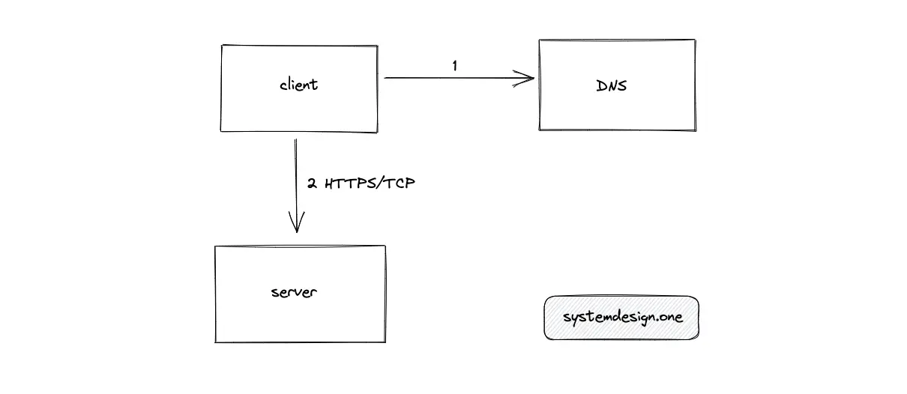
The browser (client) must find the Internet protocol (IP) address of the server that hosts the website. The client subsequently requests the IP address of the server to transfer or retrieve data. When the client enters a shortened URL (created using a URL shortener) into the browser there is an additional step of URL redirection before transferring data between the client and the server.
Further system design learning resources
Download my system design playbook for free on newsletter signup:
What is domain name resolution?
Domain Name System (DNS) is a data store that stores the mapping from a domain name (such as google.com) to its IP address (142.250.185.78). You could compare DNS to an address book or a telephone book1.
You need a domain name (instead of using an IP address directly) because it’s trivial to remember domain names for a human. Each server (for example, google.com) should have a unique IP address on the internet. The DNS lets you find the IP address of the specific server on the internet using its domain name.
The domain name space (DNS hierarchy) is an inverted tree structure. The DNS hierarchy has a single domain at the top level known as the root domain.
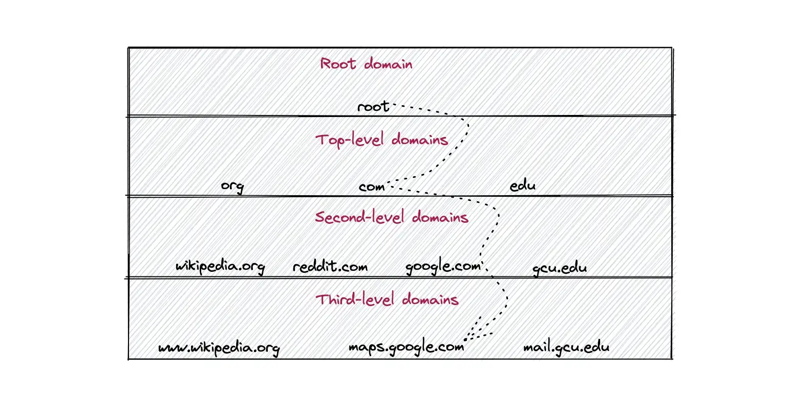
The DNS resolution starts at the root domain, TLD, and works its way down to the second-level domain. The DNS resolution might traverse through multiple third-level domains until the hostname of the website resolves to an IP address.
A URL consists of the following parts2:
- protocol (scheme)
- subdomain
- domain (second-level)
- top-level domain
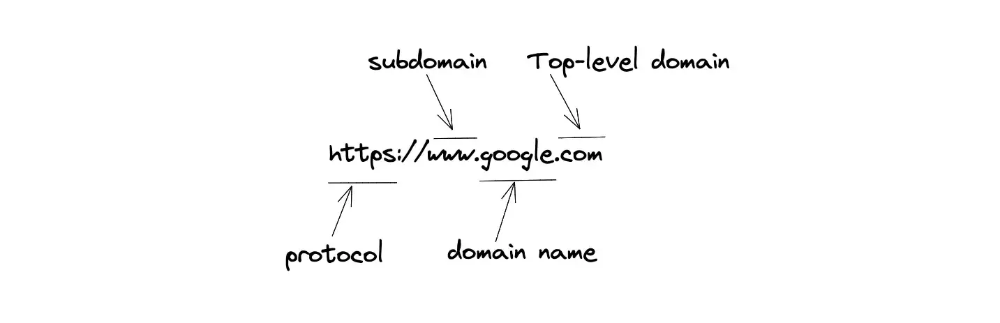
The protocol section of the URL informs the web server which protocol to use on accessing a website. The subdomain indicates the services offered by the website such as maps or mail. The second-level domain indicates the name of the website. The top-level domain indicates the type of entity the organization registers on the internet.
The DNS resolution is a sequential process. The subsequent steps of DNS resolution get executed only if the cache in the former step does not have the relevant DNS entry.
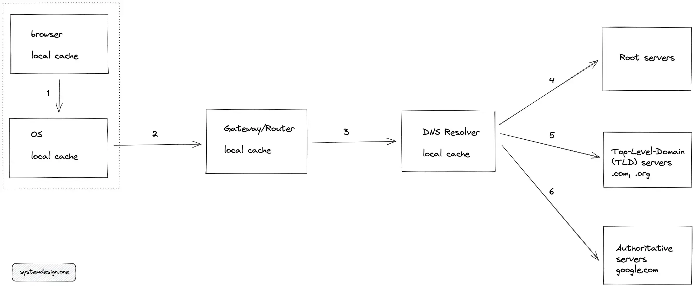
The following operations get executed in sequential order for DNS resolution:
- The browser (client) checks if the hostname to IP address mapping exists in the local cache of the client.
- If the last step failed, the client checks the Operating System (OS) local cache by executing a system call (syscall).
- If the last step failed, the client makes a DNS request to the Gateway/Router and checks the local cache of the Router.
- If the last step failed, the router forwards the request to Internet Service Provider (ISP) and checks the DNS cache of the ISP.
- If the last step fails, the DNS resolver queries the root servers (there are 13 root servers with replicas worldwide).
- DNS resolver queries Top Level Domain (TLD) servers such as .com, or .org.
- DNS resolver queries Authoritative name servers such as google.com.
- Optionally, the DNS resolver queries Authoritative subdomain servers such as maps.google.com depending on your query.
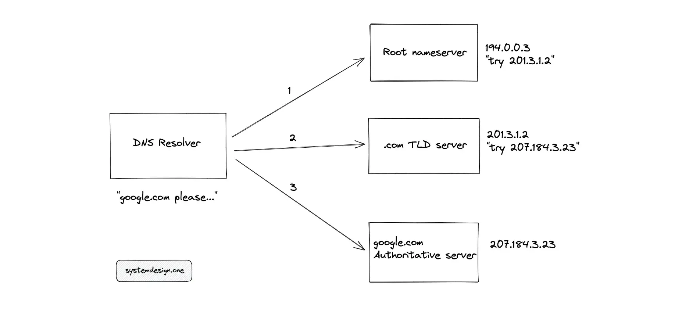
Once the DNS query is resolved, the intermediate components in the DNS resolution process would cache the result with a Time-to-live (TTL) expiry time limit. If you change the IP address of a website, the client should wait until TTL has elapsed to automatically invalidate the cache. The cache also improves the latency of subsequent client requests.
TCP three-way handshake
The client should create a connection to the server to transfer and receive data. Transmission Control Protocol (TCP) is one of the underlying protocols in Hypertext Transfer Protocol (HTTP).
You can compare HTTP to an abstract or a high-level protocol (Application layer or layer 7 in the OSI model) used between the client and the server to transfer data. Data transferred in HTTP is human-readable. TCP is a lower-level protocol (Transport layer or layer 4 in the OSI model) that handles error detection and retransmission of data packets3.
The client performs a three-way handshake with the server to establish a TCP connection. TCP requires a three-way handshake because of the bi-directional communication channel. If you make a two-way handshake, you can only start a single-directional communication channel.
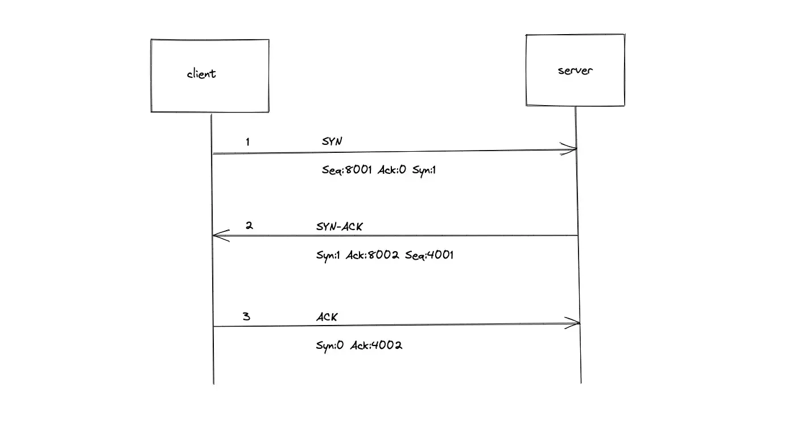
The following synchronize (SYN) and acknowledge (ACK) messages are sent between the client and the server to open a TCP connection:
- The client sends an SYN request with a random sequence number (x).
- The server responds with SYN-ACK. The acknowledgment number is set to one more than the received sequence number (x+1). The server sends another random sequence number (y).
- The client sends ACK. The client sends an acknowledgment number that is one more than the received sequence number (y+1).
HTTPS Upgrade
Hypertext Transfer Protocol Secure (HTTPS) is an extension of Hypertext Transfer Protocol (HTTP). The data transferred through HTTP is not encrypted and therefore anyone can eavesdrop on the data packets that are transferred. HTTPS encrypts the transferred data and thereby prevents man-in-the-middle attacks4. Most of the modern websites on the internet enable HTTPS for secure communication. HTTPS uses port 443 by default while HTTP uses port 80.
In asymmetric encryption, there is a key pair — public and private keys. The public keys can be shared with anyone on the internet while the private key should never be shared. In symmetric encryption, there is only a single private key and both parties should have access to the same key to encrypt or decrypt the message.
You could compare asymmetric encryption to an email service. The public key would be your Email address and the private key would be the password used to access the email account. Anyone can easily verify that you sent the email by looking at the Email address of the sender. However, if anyone sends an Email to your account, only you can access it using the password.
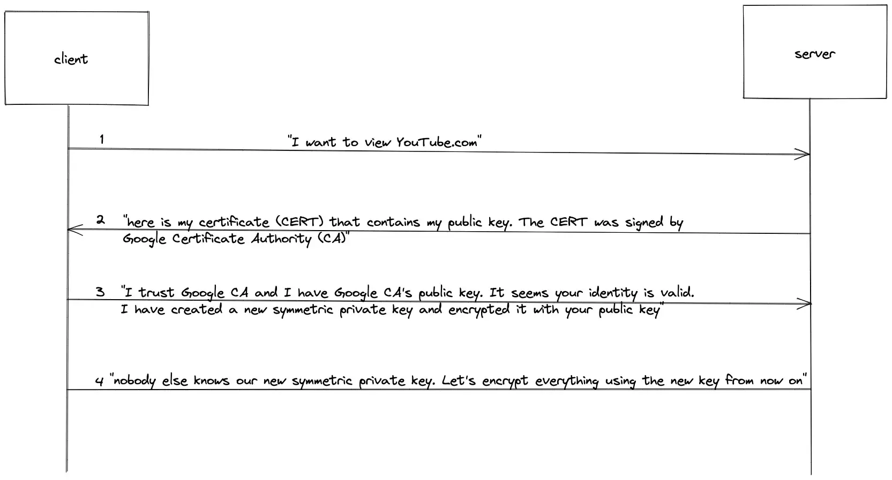
The following operations are executed between the client and server to upgrade HTTP to HTTPS before the transfer of any data packets:
- The browser (client) uses the HTTP Request headers to make an HTTPS upgrade request to the server.
- The server responds to the client with a Secure Sockets Layer (SSL) certificate that contains the public key of the server, which was signed by the Certificate Authority (CA).
- The client by default has the public keys of popular CA (for example, Google CA). The client can use the public keys of the CA to verify the validity of the SSL certificate by checking the digital signature (digital signature in asymmetric encryption).
- The client creates a new symmetric private key and encrypts the new symmetric private key with the public key of the server.
- The server decrypts the new symmetric private key shared by the client using the server’s private key.
- Any further communication between the client and the server would be encrypted using the new symmetric private key and therefore remains secure.
Anyone listening to the HTTP Upgrade request or response messages would not be able to capture any meaningful data because of the asymmetric encryption. Once HTTPS is upgraded, further communication between the client and the server utilizes symmetric encryption.
To create an SSL certificate, the server executes a Certificate Signing Request (CSR) to the CA.
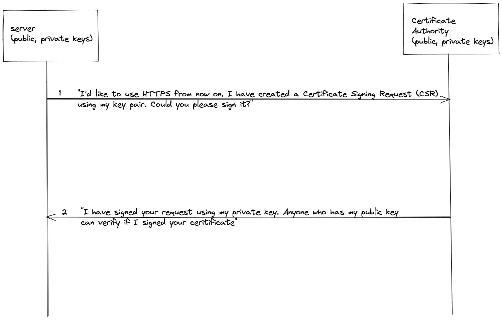
The CSR transfers the public key of the server to the CA. The CA has a pair of public and private keys. The CA signs the public key of the server using the private key of the CA and creates an SSL certificate. Anyone on the internet who has access to the public key of the CA could easily verify the digital signature of the SSL certificate.
HTTP Request/Response
Hypertext Transfer Protocol (HTTP) is a mechanism for transporting data between a client and a server. The client issues an HTTP(S) Request to the server to fetch or transfer data. The server responds with relevant content and completion status information about the request5, 6.
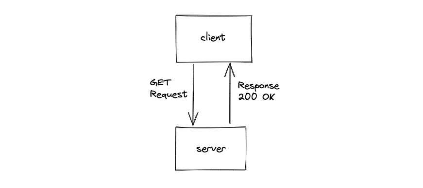
The client makes a GET HTTP Request to view a website (such as google.com). The client makes a POST HTTP Request if the client wants to submit data to the server (such as searching for some keyword in google.com).
The URL can be broken down into multiple components. The domain name is used to identify the server. The URL path is used to identify the resource (a specific file or information) on the server. The query parameters are used to filter or sort the data (or transfer stateful information). The following is the simplified workflow when you view the google.com website on your client7, 8:
- client makes an HTTP GET method Request to the google.com server
- the server responds with a 200 OK status code if successful
The HTTP Request is composed of the following entities:
- Uniform Resource Locator (URL)
- HTTP headers
- HTTP body (optional)
|
|
The HTTP Request method (Verb) defines the type of action that should be performed on the server. Some of the popular HTTP methods are the following:
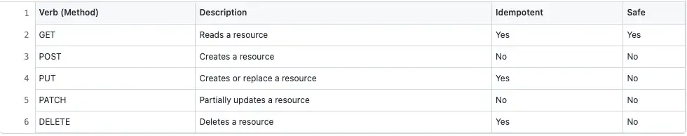
Idempotent: multiple invocations of the resource yield similar outcomes
Safe: Invocation does not modify the resource
The server (Nginx, Apache web server) delegates the HTTP Request to the Request handlers. The Request handler is a piece of code that is defined in any server-side programming language (such as Python, Node.js, or Java). The Request handler checks the HTTP headers of the Request (content-type, content-encoding, cookies, etc) and subsequently validates the HTTP Request body. The Request handler then generates an appropriate response in the content-type (JSON, XML) that was requested by the client.
The HTTP server response is composed of the following entities:
- HTTP headers
- HTTP body
|
|
The HTTP Response Status Code helps you to troubleshoot failures. The HTTP Status Codes can be categorized into the following9, 10:
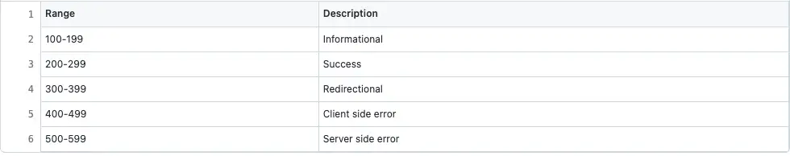
The HTTP Request and Response headers are used to control the cache, authorize the client, or compress the data that is transferred between the client and the server. For example, the user-agent HTTP request header helps the server to identify if the client is a mobile or a desktop client. Some of the most popular HTTP headers are the following:
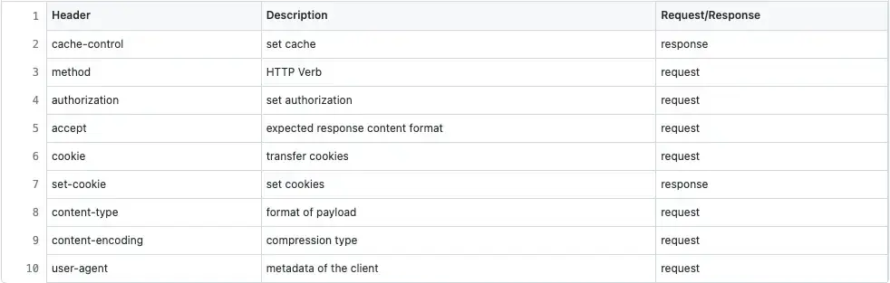
Browser rendering the response from the server
The browser might make multiple HTTP Requests to the server to fetch all the relevant data for a website such as Cascading Style Sheets (CSS), JavaScript files, Images, or Videos. Finally, the browser renders the HTML and the content received from the server11.
Depending on the HTTP response headers (Cache-control), the browser caches the response to prevent re-requesting the same data from the server. The cache improves the latency of the website.
Summary
The client usually caches the DNS mapping and server response with an arbitrary Time-to-live (TTL) expiry time. The DNS server is not queried multiple times when you revisit the same website because of the local cache.
In an internet-scale system, there are multiple components as intermediate layers to meet the incoming load demand. Content Delivery Networks (CDN), Load Balancers, and Reverse Proxy are some of the intermediate components that might appear in a large-scale system.
What to learn next?
Download my system design playbook for free on newsletter signup:
Questions and Solutions
If you would like to challenge your knowledge on the topic, visit the article: Knowledge Test
License
CC BY-NC-ND 4.0: This license allows reusers to copy and distribute the content in this article in any medium or format in unadapted form only, for noncommercial purposes, and only so long as attribution is given to the creator. The original article must be backlinked.
References
-
Domain Name System, Wikipedia.org ↩︎
-
Transmission Control Protocol, Wikipedia.org ↩︎
-
MDN Web docs HTTP headers, Mozilla.org ↩︎
-
MDN Web docs HTTP response status Code, Mozilla.org ↩︎
-
HTTP Request methods, Wikipedia.org ↩︎
-
What is HTTP, Cloudflare.com ↩︎
-
RESTful web API design, learn.microsoft.com ↩︎
-
Donne Martin, System Design Primer HTTP communication, GitHub.com ↩︎
-
Populating the page: how browsers work, Mozilla.org ↩︎